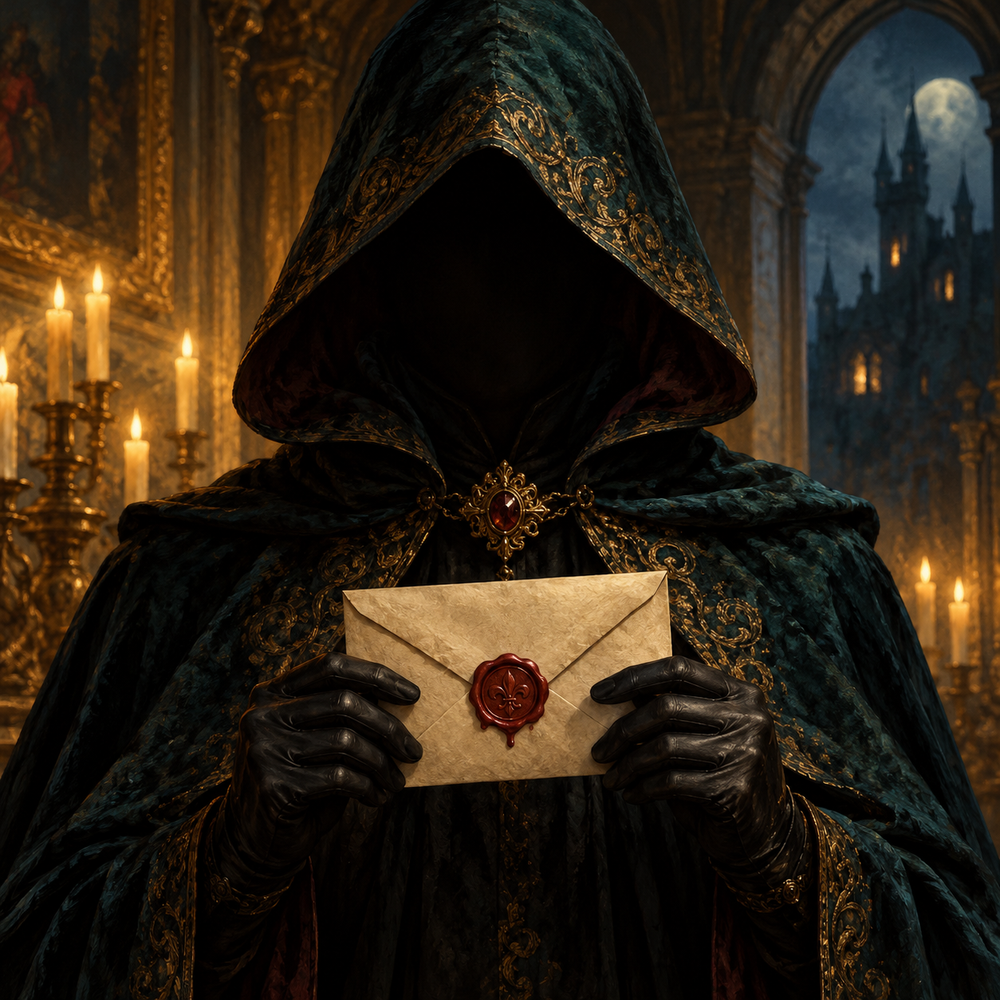

ТАЙНА ЕЩЁ НЕ РАСКРЫТА
РАУНД 01
Вопрос от
У каждой тайны — свой час
Вращайте колесо, чтобы узнать,
какой вопрос приготовила вам эта ночь.
ДЕМОНСТРАЦИОННЫЕ ВОПРОСЫ
HALLOWEEN · ОСОБАЯ ИГРА
Когда за столом собираются тени, на свет выходит истина.
15 вопросов ждут своего часа

Вращайте колесо, чтобы узнать,
какой вопрос приготовила вам эта ночь.